基于REGION PROPOSAL的方法
R-CNN
步骤
R-CNN的算法步骤:
- 采用Selective Search方法从一张图像中提取约2K个候选区域；
- 首先归一化为统一尺寸，再对每个候选区域，使用深度网络提取特征；
- 将提取出的特征送入每一类的SVM 分类器，判别是否属于该类；
- 使用回归器精细修正候选框位置。因为目标检测问题的衡量标准是重叠面积：许多看似准确的检测结果，往往因为候选框不够准确，导致重叠面积很小。
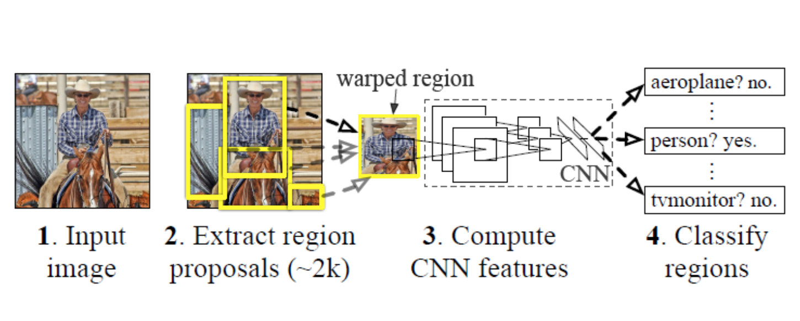
SPP-NET
Kaiming He最先对此作出改进，提出了SPP-net（全称：Spatial Pyramid Pooling），最大的改进是只需要将原图输入一次，就可以得到每个候选区域的特征。
在R-CNN中，候选区域需要经过变形缩放，以适应CNN输入，可以通过修改网络结构，使得任意大小的图片都能输入到CNN中。Kaiming He在论文中提出了SPP结构来适应任何大小的图片输入。SPP-net对R-CNN最大的改进就是特征提取步骤做了修改，其他模块仍然和R-CNN一样。特征提取不再需要每个候选区域都经过CNN，只需要将整张图片输入到CNN就可以了，ROI特征直接从特征图获取。和R-CNN相比，速度提高了24~102倍。
SPP-Net的算法步骤:
- 首先通过选择性搜索，对待检测的图片进行搜索出2000个候选窗口。这一步和R-CNN一样。
- 特征提取阶段。这一步就是和R-CNN最大的区别了，这一步骤的具体操作如下：把整张待检测的图片，输入CNN中，进行一次性特征提取，得到feature maps，然后在feature maps中找到各个候选框的区域(ROI)，再对各个候选框采用金字塔空间池化，提取出固定长度的特征向量。而R-CNN输入的是每个候选框，然后在进入CNN，因为SPP-Net只需要一次对整张图片进行特征提取，速度会大大提升。
- 最后一步也是和R-CNN一样，采用SVM算法进行特征向量分类识别。
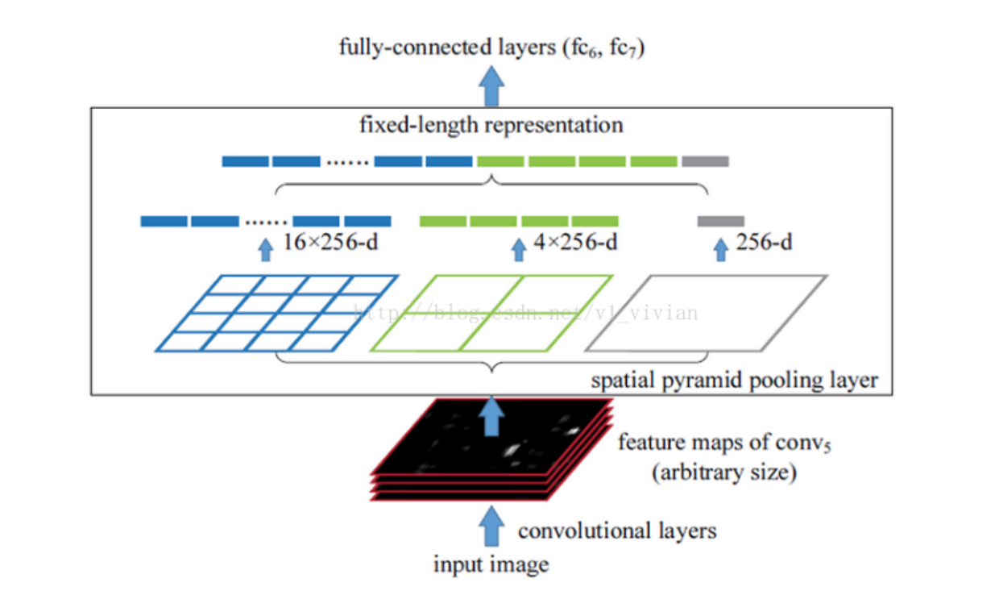
FAST R-CNN
FAST R-CNN的算法步骤：
- 通过selective search生成region proposal，每张图片大约2000个RoI；
- Fast-RCNN把整张图片送入CNN，进行特征提取，把region proposal映射到CNN的最后一层卷积feature map上；
- 通过RoI pooling层（也可以称为单层的SPP layer）使得每个建议窗口生成固定大小的feature map；
- 继续经过两个全连接层（FC）得到特征向量。特征向量经由各自的FC层，得到两个输出向量，第一个是分类，使用softmax，第二个是每一类的bounding box回归。利用Softmax Loss（探测分类概率）和Smooth L1 Loss（探测边框回归）对分类概率和边框回归（Bounding Box Regression）联合训练。
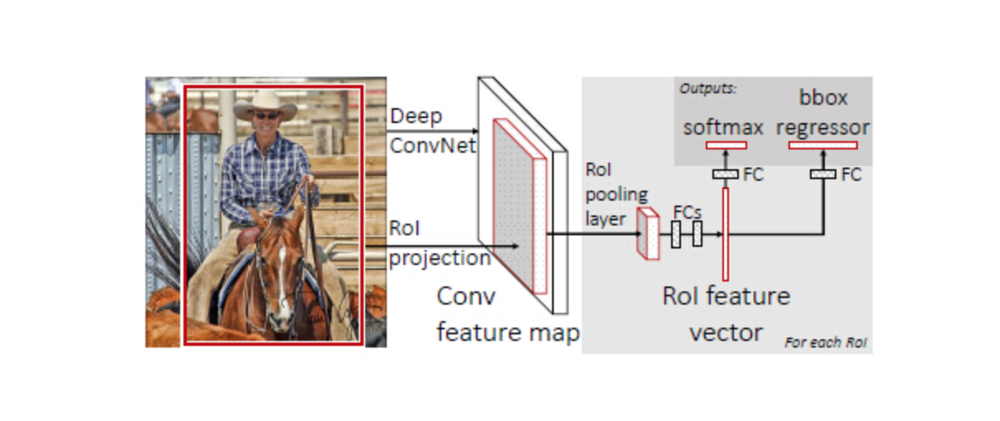
FASTER R-CNN
由于Fast R-CNN仍然是基于Selective Search方法提取region proposal，而Selective Search方法提取region proposal的计算是无法用GPU进行的，无法借助GPU的高度并行运算能力，所以效率极低。而且选取2000个候选区域，也加重了后面深度学习的处理压力。Faster-RCNN = RPN（区域生成网络）+ Fast-RCNN，用RPN网络代替Fast-RCNN中的Selective Search是Faster-RCNN的核心思想。
FASTER R-CNN 的算法步骤:
- 输入测试图像；
- 将整张图片输入CNN，进行特征提取；
- 用RPN生成建议窗口（proposals），每张图片生成300个建议窗口；
- 把建议窗口映射到CNN的最后一层卷积feature map上；
- 通过RoI pooling层使每个RoI生成固定尺寸的feature map；
- 利用Softmax Loss（探测分类概率）和Smooth L1 Loss（探测边框回归）对分类概率和边框回归（Bounding Box Regression）联合训练。
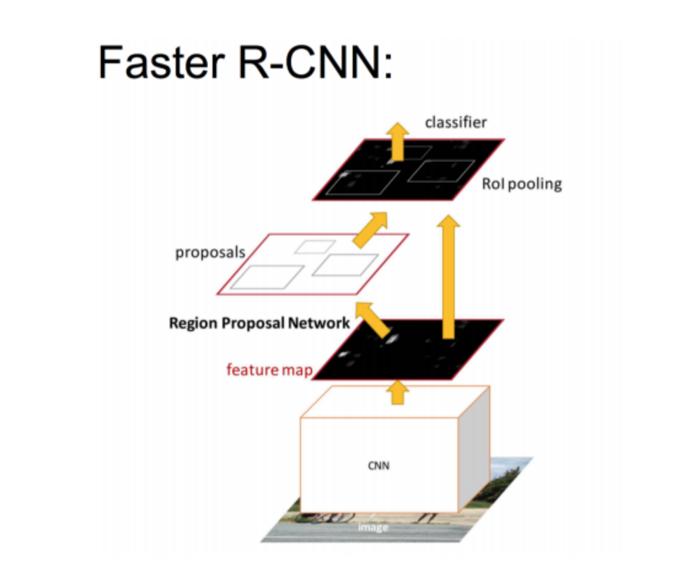
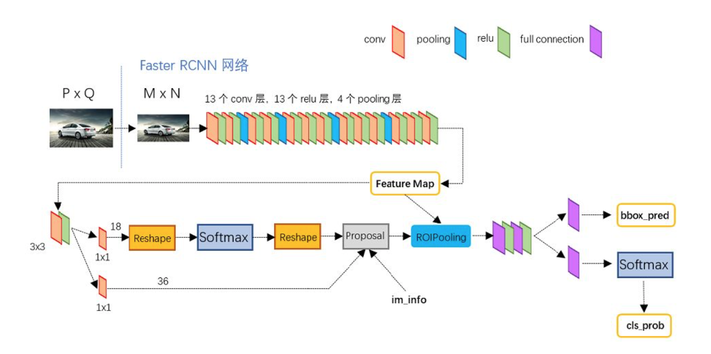
Anchors
所谓anchors，实际上就是一组由rpn/generate_anchors.py生成的矩形。直接运行作者demo中的generate_anchors.py可以得到以下输出：
1 | [[ -84. -40. 99. 55.] |
其中每行的4个值 $(x_1, y_1, x_2, y_2)$ 表矩形左上和右下角点坐标。9个矩形共有3种形状，长宽比为大约为 $\frac{width}{height} \in \{1:1, 1:2, 2:1\}$三种，如图。实际上通过anchors就引入了检测中常用到的多尺度方法。
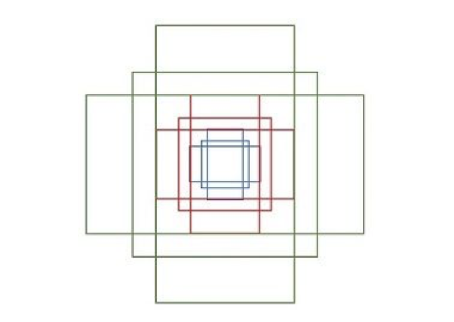
遍历Conv layers计算获得的feature maps，为每一个点都配备这9种anchors作为初始的检测框。这样做获得检测框很不准确，不用担心，后面还有2次bounding box regression可以修正检测框位置。
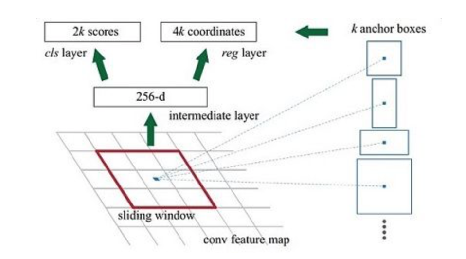
假设在conv5 feature map中每个点上有k个anchor（默认k=9），而每个anhcor要分positive和negative，所以每个点由256d feature转化为cls=2k scores；而每个anchor都有(x, y, w, h)对应4个偏移量，所以reg=4k coordinates. 补充一点，全部anchors拿去训练太多了，训练程序会在合适的anchors中随机选取128个postive anchors+128个negative anchors进行训练。
Bounding box regression
对于窗口一般使用四维向量 (x,y,w,h) 表示，分别表示窗口的中心点坐标和宽高。对于下图，红色的框A代表原始的positive Anchors，绿色的框G代表目标的GT，我们的目标是寻找一种关系，使得输入原始的anchor A经过映射得到一个跟真实窗口G更接近的回归窗口G’，即
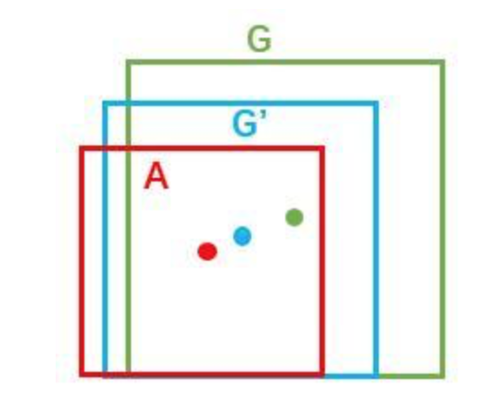
- 给定 anchor $A = (A_x, A_y, A_w, A_h)$ 和 $GT =( G_x, G_y, G_w, G_h)$
- 寻找一种变换 F, 使得:
那么经过何种变换F才能从图10中的anchor A变为G’呢？ 比较简单的思路就是:
- 先做平移
- 再做缩放
需要学习的是 $d_x(A)$, $d_y(A)$, $d_w(A)$, $d_h(A)$ 这四个变换。当输入的anchor A与GT相差较小时，可以认为这种变换是一种线性变换， 那么就可以用线性回归来建模对窗口进行微调。
在 faster RCNN的原文中，positive anchor与ground truth之间的平移量$(t_x, t_y)$与尺度因子$(t_w, t_h)$如下:
对于训练bouding box regression网络回归分支，输入是X(cnn feature), label 是上述尺度变换因子，训练的目标是在输入fetaure X的条件下，回归网络分支的输出就是每个Anchor的平移量和变换尺度$(t_x, t_y, t_w, t_h)$ 显然即可用来修正Anchor位置了。
Faster RCNN 训练
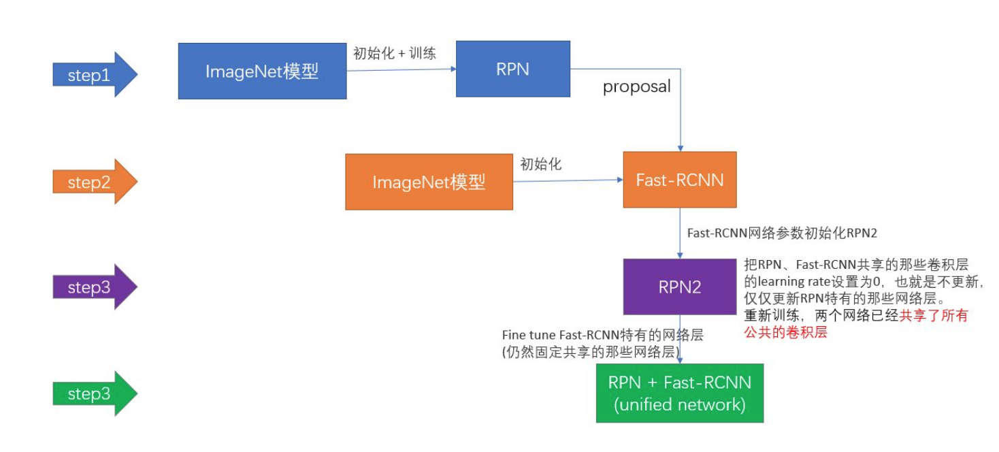
Faster R-CNN的训练，是在已经训练好的model（如VGG_CNN_M_1024，VGG，ZF）的基础上继续进行训练。实际中训练过程分为6个步骤：
- 在已经训练好的model上，训练RPN网络
- 利用步骤1中训练好的RPN网络
- 第一次训练Fast RCNN网络
- 第二训练RPN网络
- 再次利用步骤4中训练好的RPN网络
- 第二次训练Fast RCNN网络
YOLO
YOLO的核心思想就是利用整张图作为网络的输入，直接在输出层回归bounding box的位置和bounding box所属的类别。
YOLO的算法步骤:
- 首先，将一幅图像分成S×S个网格（grid cell），如果某个物体的中心落在这个网格中，则这个网格就负责预测这个物体。
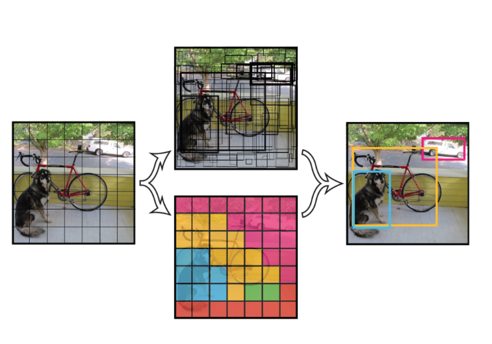
YOLO - 每个网格要预测B个bounding box，每个bounding box除了要回归自身的位置之外，还要附带预测一个confidence。这个confidence代表了所预测的box中含有object的置信度和这个box预测的有多准这两重信息。
- 每个bounding box要预测(x, y, w, h)和confidence共5个值，每个cell还要预测一个类别信息，记为C类。则S×S个网格，每个网格要预测B个bounding box还要预测C个categories。输出就是S×S×(5×B+C)的一个tensor。
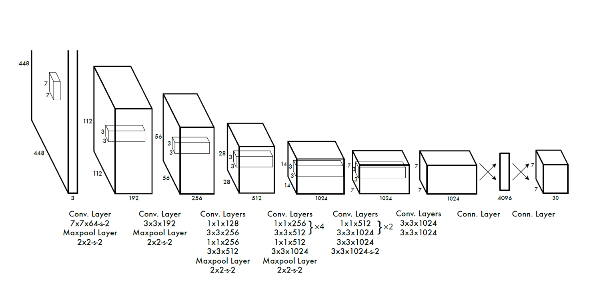
YOLO v2
Batch Normalization
可以提高模型收敛速度，减少过拟合；
High Resolution Classifier
首先采用448×448分辨率的ImageNet数据finetune使网络适应高分辨率输入；然后将该网络用于目标检测任务finetune；
Convolutional With Anchor Boxes
去除了YOLO的全连接层，采用固定框（anchor boxes）来预测bounding boxes；借鉴Faster RCNN的做法，YOLO2也尝试采用先验框（anchor）。在每个grid预先设定一组不同大小和宽高比的边框，来覆盖整个图像的不同位置和多种尺度，这些先验框作为预定义的候选区在神经网络中将检测其中是否存在对象，以及微调边框的位置。
Dimension Clusters**
Anchor boxes是通过k-means在训练集中学得的，并且作者定义了新的距离公式，使用k-means获取anchor boxes来预测bounding boxes让模型更容易学习如何预测bounding boxes；聚类算法最重要的是选择如何计算两个边框之间的“距离”，对于常用的欧式距离，大边框会产生更大的误差，但我们关心的是边框的IOU。所以，YOLO2在聚类时采用以下公式来计算两个边框之间的“距离”。
Direct location prediction
借鉴于Faster RCNN的先验框方法，在训练的早期阶段，其位置预测容易不稳定。其位置预测公式为：
其中,(x,y)是预测边框的中心，$x_a$, $y_a$是先验框（anchor）的中心点坐标，(w_a,h_a)是先验框（anchor）的宽和高。$t_x$,$t_y$是要学习的尺度变换因子。
由于$t_x$,$t_y$没有约束，因此预测边框的中心可能出现在任何位置，训练早期阶段不容易稳定。YOLO调整了预测公式，将预测边框的中心约束在特定gird网格内。
其中，$b_X,b_y,b_w,b_h$是预测边框的中心和宽高,$Pr(object)\dot IOU(b,object) = \sigma(t_o)$ 是预测边框的置信度，YOLO1是直接预测置信度的值，这里对预测参数$t_o$进行$\sigma$变换后作为置信度的值。$c_x$,$c_y$是当前网格左上角到图像左上角的距离，要先将网格大小归一化，即令一个网格的宽=1，高=1。$p_w,p_h$是先验框的宽和高。
see explanantion in https://www.jianshu.com/p/86b8208f634f
Fine-Grained Features
YOLOv2通过添加一个pass through layer，将前一个卷积块的特征图的信息融合起来；对象检测面临的一个问题是图像中对象会有大有小，输入图像经过多层网络提取特征，最后输出的特征图中（比如YOLO2中输入416416经过卷积网络下采样最后输出是1313），较小的对象可能特征已经不明显甚至被忽略掉了。为了更好的检测出一些比较小的对象，最后输出的特征图需要保留一些更细节的信息。
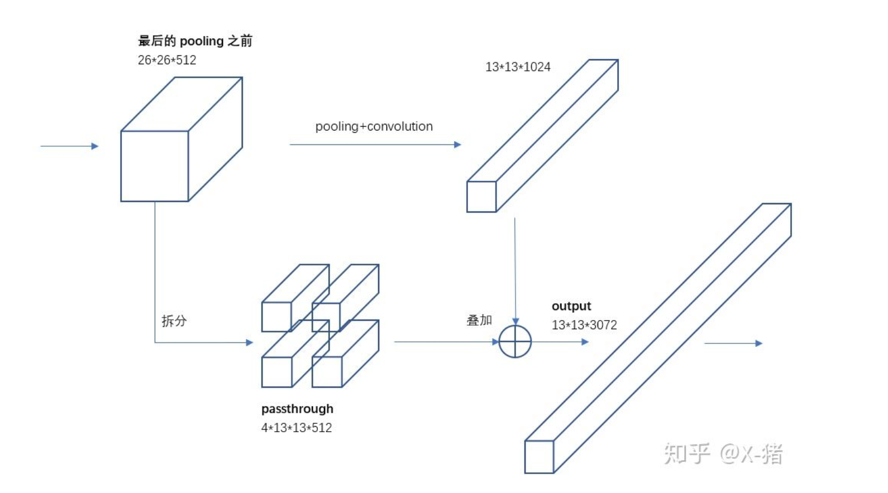
Multi-Scale Training
YOLOv2网络只用到了卷积层和池化层，因此可以进行动态调整输入图像的尺寸，作者希望YOLOv2对于不同尺寸图像的检测都有较好的鲁棒性，因此做了针对性训练。这种策略让YOLOv2网络不得不学着对不同尺寸的图像输入都要预测得很好，这意味着同一个网络可以胜任不同分辨率的检测任务，在网络训练好之后，在使用时只需要根据需求，修改网络输入图像尺寸（width和height的值）即可。
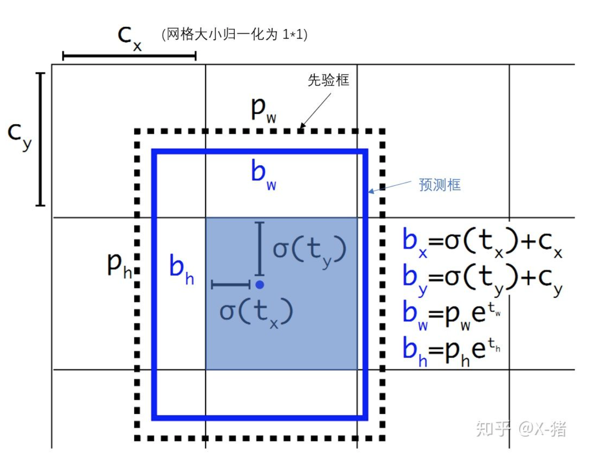
YOLO v3
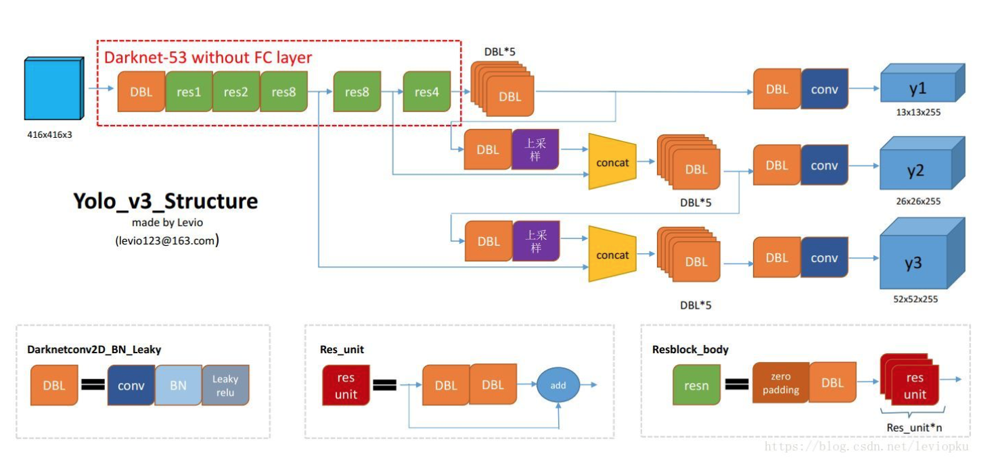
- DBL: 如图1左下角所示，也就是代码中的Darknetconv2d_BN_Leaky，是yolo_v3的基本组件。就是卷积+BN+Leaky relu。对于v3来说，BN和leaky relu已经是和卷积层不可分离的部分了(最后一层卷积除外)，共同构成了最小组件。
- resn：n代表数字，有res1，res2, … ,res8等等，表示这个res_block里含有多少个res_unit。这是yolo_v3的大组件，yolo_v3开始借鉴了ResNet的残差结构，使用这种结构可以让网络结构更深(从v2的darknet-19上升到v3的darknet-53，前者没有残差结构)。对于res_block的解释，可以在图1的右下角直观看到，其基本组件也是DBL。
- concat：张量拼接。将darknet中间层和后面的某一层的上采样进行拼接。拼接的操作和残差层add的操作是不一样的，拼接会扩充张量的维度，而add只是直接相加不会导致张量维度的改变。
多尺度特征图
- YOLOv3输出了3个不同的尺度特征图，在它们上面进行融合预测物体框。这借鉴了特征金字塔网络（FPN, feature pyramid networks），采用多尺度来对不同大小的目标进行检测，越精细的grid cell就可以检测出越精细的物体。
- 生成3个尺度特征图：
- 尺度y1：尺度1的feature map做卷积后直接得到box信息
- 尺度y2：对尺度1输出的卷积进行上采样，然后和尺度2的feature map相加，再经过卷积输出box信息，整个feature map大小相对于尺度1扩大了两倍
- 尺度y3：同理y2
- 3个尺度特征图深度都是255，边长的规律是13:26:52。
- 采用了多尺度的特征融合，所以边界框的数量要比之前多很多.以输入图像为416x416为例的(13x13+26x26+52x52)x3=10647，要比v2的13x13x5更多。
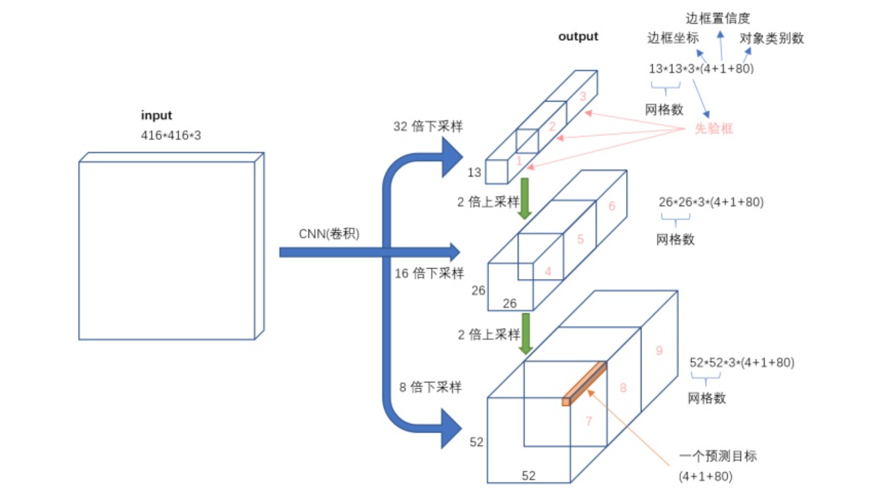